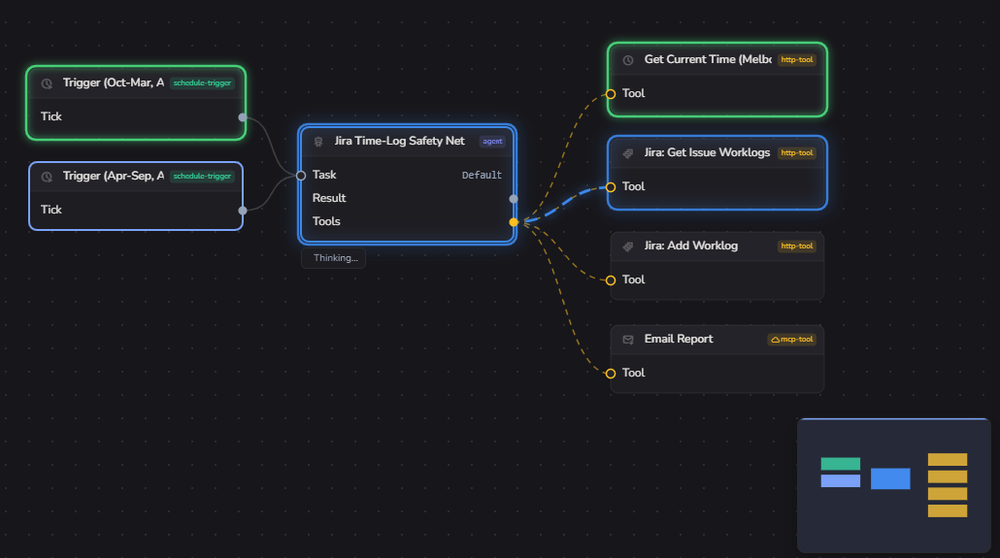

The visual studio and debugger for multi-agent AI workflows. Design on a canvas, step through every run, deploy the identical engine to your own cloud.
“An agentic workflow solution that is capable and easy enough to run our day-to-day operations was a missing piece we didn't know we needed.”
David Markovski
Optimised Accounting
n8n raised a $180M Series C led by Accel. Visual orchestration is a venture-scale category, not a feature someone bolts on.
OpenAI retires Agent Builder on 30 November 2026 and points those workflows at a code SDK. The demand did not disappear with it, and those users did not become engineers.
MCP standardised tool access, so connector count is now table stakes for everyone. The contest moves to the run itself: can you see it, trust it, and fix it?
Our first design partner is an accounting firm, not a tech startup. That is what production agent adoption looks like in 2026, and it is not who a code SDK serves.

See which step is active, what is being handed off, and what comes back, as it happens.
Custom Canvas2D renderer across hundreds of nodes. Built like a design tool, not a dashboard.
The canvas is the documentation. A non-engineer can see what the agents are doing.
Design on the canvas and run locally. Every step, handoff and tool call plays out in front of you. Offline, against real data, zero cloud round-trip.
Ship the identical runtime into a Durable Object. Your keys, your cloud, no rewrite and no lock-in. Or take the managed path on Phorma Cloud.
| Visual canvas | Inspect a past run | Pause, step, breakpoint a live run |
Agents as the primitive |
One engine, local to prod |
Runs in your own cloud |
|
|---|---|---|---|---|---|---|
| Phorma | ✓ | ✓ | ✓ | ✓ | ✓ | ✓ |
| n8n, Zapier, Make | ✓ | ✓ | × | bolted on | × | self-host |
| LangGraph, CrewAI | × | external | in code | ✓ | ✓ | ✓ |
| Vendor-native builders | ✓ | ✓ | × | ✓ | × | × |
Credit where it is due. n8n ships execution history, data pinning, AI evaluations and a Debug in editor action that replays a past execution's data in the canvas. Real tooling - and a post-mortem. You still cannot hold a live agent at node three, read what it decided and step it forward.
Automation and platform engineers running agents in production.
They are debugging blind today, they install desktop tools without friction, and they evangelise internally.
The ops owner who needs to see and trust the system.
The canvas is what makes the engineer's work legible to them. That is what turns one seat into a team plan.
Free studio, zero-key first run.
No license gate, local Ollama out of the box. Content-led on debugging and eval practice, plus outbound to teams migrating off deprecated vendor builders.
| Plan | Price / mo | Credits | Runs | Concurrent |
|---|---|---|---|---|
| Starter | $20 | 1,000 | 300 | 1 |
| Pro | $60 | 3,000 | 2,000 | 3 |
| Team | $200 | 10,000 | 10,000 | 10 |
| Enterprise | custom | custom | custom | custom |
Top-up packs at $10 / $20 / $40, priced so upgrading always beats topping up. Target gross margin 75-80%; Cloudflare runtime cost is negligible per run.
Bring-your-own runtime and keys stay free forever. What teams pay for, and cannot easily walk away from, is the accumulated record of what their agents did: every run trace, every eval score across every model, shared across the team.
The moat is the journal, not the token markup.
31k lines, zero framework deps, vitest plus property tests
61k lines, custom Canvas2D renderer, Angular 20
Durable Object runtime, Rust keychain-backed key handling
18 months of runway. Two hires, one measurement layer, and one number that matters: paying teams.
First hire is a product-minded salesperson. The product is further ahead than the pipeline, so sales comes before more engineering. Plus design-partner onboarding and the content engine.
Senior engineer from month six. Self-serve billing, onboarding, product instrumentation, team workspaces and the AWS deploy target.
Cloudflare, subsidised inference for the zero-key first run, code signing, then legal, accounting, insurance and contingency.
Billing and analytics live · 25 paying teams · $2.5k MRR
120 paying teams · $12k MRR · 800 weekly active
250+ paying teams · $25k MRR ($300k ARR run-rate) · 40% week-4 retention